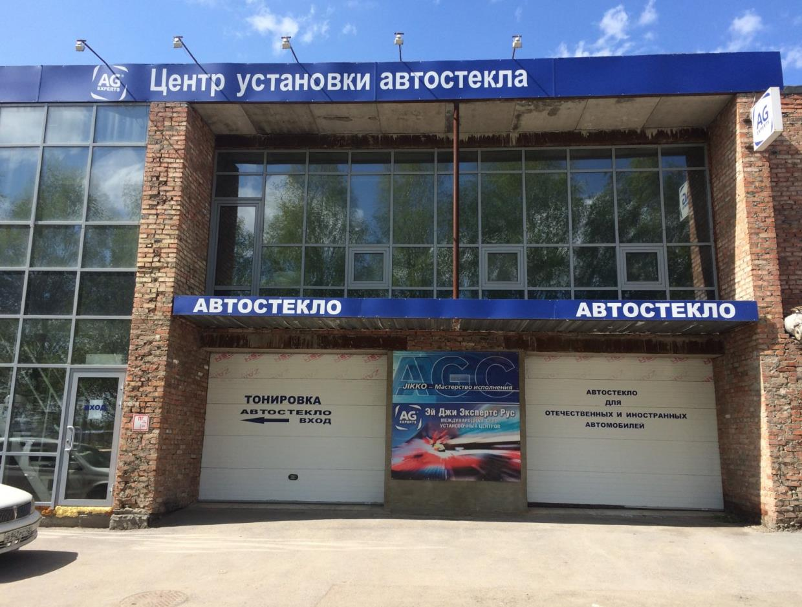

Подыскивал себе на машину дворники. Посоветовали Центр установки автостекла на Терешковой, 51. То что происходило впоследствии не лезет ни в какие ворота, и вы должны об этом поскорее узнать.

Во-первых, я позвонил туда, и поинтересовался, есть ли дворники в наличии. Девушка ответила, что дворники есть, я спросил как они работают завтра. Ответила. Я положил трубку.
Через 30 секунд я решил, что нечего медлить и нужно купить дворники сегодня. Набрал номер. Девушка взяла трубку со словами «Вы, наверное, хотите узнать как мы работаем сегодня?»
— o_O?!
— До девяти
Я поехал сквозь метель. Девушка ВСТРЕТИЛА меня НА УЛИЦЕ словами «Я СЕЙЧАС ОТКРОЮ ВАМ ВОРОТА, ЗАЕЗЖАЙТЕ БУДЕМ МЕРИТЬ!»
— o_O?!
Хотя крепление дворников и не было смещено как на оригинальных я решил их купить. Ведь цена их составила 800 рублей за оба. На оригинальных столько стоят только резинки. Тем более дворники я, примеряя, уже установил.
Но, вот незадача, терминала в магазине нет, а у меня нет наличных. У тому времени я уже подобрал челюсть и набрался наглости
— Давайте, доеду до «Палаты», сниму деньги и завезу.
— Конечно
— o_O?!
— Там гололёд, не торопитесь, я всё равно работаю до девяти
— o_O?!
Я, конечно, съездил. Конечно, снял. Конечно завёз долг.
Знаете, что сказал мне девушка-продавец вслед?
— ОГРОМНОЕ спасибо!
— o_O?!
Хочется задать читателю вопросы. Что это, мать вашу, было вообще?! И, как думаешь, где теперь все в Кемерове должны покупать дворники?